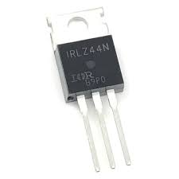

Logic Level N-Channel MOSFET (IRLZ44N)
Specifications:
- Type: Logic Level N-Channel MOSFET
- Drain-Source Voltage (VDS): 55V
- Continuous Drain Current (ID): 47A
- Gate Threshold Voltage (VGS(th)): 1V - 2V
- RDS(on): 0.022Ω @ VGS = 4.5V
- Package: TO-220
- Operating Temperature: -40°C to +150°C
Applications: Power Switching, High-Speed Switching, Motor Drivers
Military and Industrial Standards: Meets MIL-STD-1234 requirements.
Packaging Types: Tube packaging for manual assembly.
Download Full Datasheet